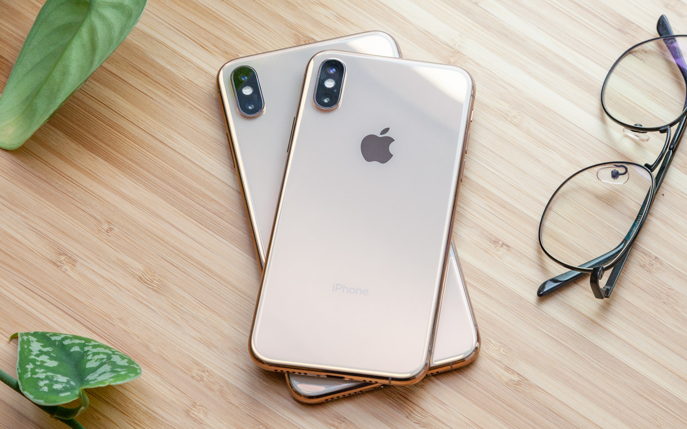
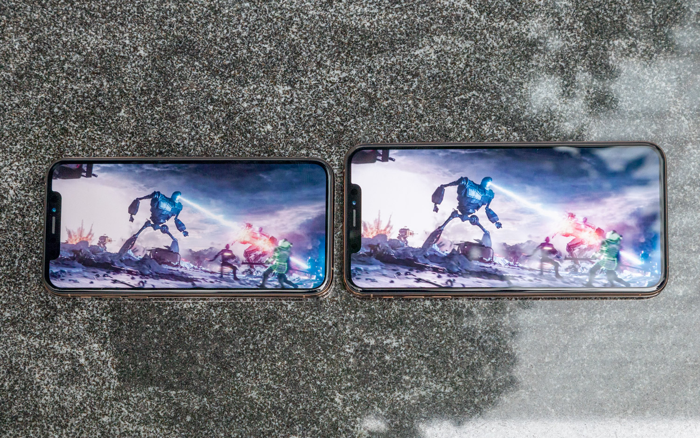

It's obscene. No, I'm not talking about the price, although $1,099 is a lot to pay for a smartphone. I'm referring to the mammoth display on the iPhone XS Max. At 6.5 inches, this thing is like a mini movie theater you carry around in your pocket.
 The 5.8-inch iPhone XS ($999) has all the same enhancements as its supersize sibling, including a faster A12 Bionic processor that blows away Android phones (again), as well as improved cameras with Smart HDR and impressive bokeh controls. But it's the XS Max that I didn't want to put down, which is why it one of the best smartphones you can buy.
The 5.8-inch iPhone XS ($999) has all the same enhancements as its supersize sibling, including a faster A12 Bionic processor that blows away Android phones (again), as well as improved cameras with Smart HDR and impressive bokeh controls. But it's the XS Max that I didn't want to put down, which is why it one of the best smartphones you can buy.
iPhone XS and iPhone XS Max Cheat Sheet
• The cameras are better, especially in low light, and the new Depth Control for portraits works well.
• Apple's A12 Bionic chip is once again faster than any Android phone.
• The iPhone XS Max is more compelling than the regular iPhone XS because of its larger 6.5-inch screen and longer battery life.
• The lack of USB-C fast charging out of the box for both phones is a bummer.
• The iPhone XS Max and iPhone XS are worth upgrading to if you own an iPhone 7 or earlier device, but some may prefer the cheaper iPhone XR.
iPhone XS and iPhone XS Price and Deals
The iPhone XS starts at $999 for 64GB of storage. We'd prefer the 128GB you get with the Galaxy Note 9's base model. But you can upgrade to 256GB and 512GB on the iPhone XS for $1,149 and $1,349, respectively. The iPhone XS Max starts at $1,099 for 64GB, and goes up to $1,249 for 256GB and a whopping $1,449 for 512GB. Yes, that's more than a 13-inch MacBook Pro.
For our money, we would go for 256GB if possible. Opting for 512GB of storage will be overkill for most people when you factor in how much you can store in iCloud Storage.
When you break down the phone's price to monthly payments, the cost varies by carrier, but figure about $42 a month for the iPhone XS and $46 for the iPhone XS Max. Be sure to check out our frequently updated best iPhone XS deals to make sure you get the best price. To see how Apple's latest iPhones compare, check out our iPhone XS vs iPhone XS Max vs iPhone XR face-off.
For a limited time, you can get the iPhone XS for as little as $699 when you trade in your current iPhone with Apple and upgrade to a new one. And you can get the iPhone XS Max for as low as $749. That's if you own a newer model like iPhone 8 or iPhone 8 Plus. You'll save about $150 if you have an older iPhone 6 and $200 with the iPhone 6 Plus.
Design: Regular and Supersized
As someone who carried the 5.5-inch iPhone 7 Plus for more than a year before moving on to the 5.8-inch iPhone X, the iPhone XS Max feels familiar in my hands and pocket. Note I didn't say that it feels great. That's because the iPhone XS Max is about the same size as the larger iPhone 7 Plus and iPhone 8 Plus while packing in a larger 6.5-inch display.

The good news is that you get more screen real estate in the same size chassis as Apple's Plus handsets, minus the bezels and Home button. The bad news is that this is definitely not a skinny-jeans phone (not that anyone should ever wear them), and that you'll need two hands to use this 7.3-ounce behemoth comfortably. By comparison, Samsung's Galaxy Note 9 is a lighter 7.1 ounces but it's also taller and a little bit thicker.
The 5.8-inch iPhone XS is better optimized for one-handed use, as it's shorter and narrower than the iPhone XS Max while weighing a lighter 6.24 ounces.

Whichever iPhone model you choose, it looks gorgeous in gold. I like the way the glass back plays with ambient light to deliver different shades, while the shiny color-matched stainless steel adds a hint of bling. Apple says this phone has the most durable glass ever on a smartphone, but we have not yet been able to test that claim. (The iPhone X finished third the last time we tested smartphone durability.)
Early drop tests on the iPhone XS look promising, though. YouTuber TechSmartt dropped the handsets from pocket height, head height (6 feet) and while standing on a picnic table with arm extended, and Apple's phones can through without cracking.
CNET had similarly successful results after dropping the iPhone XS from both 3 feet and 5 feet. Extended warranty company SquareTrade gave the iPhone XS a high breakability score following its drop tests, but it started at an unrealistic height of 6 feet.

Apple has upped the durability in another way, as the iPhone XS and XS Max are both IP68 rated for dust- and water-resistance. That means they can withstand being submerged in 2 meters of water for up to 30 minutes, compared with 1 meter of water for the same amount of time on the iP67-rated iPhone X and iPhone 8.
Display: The Max Steals the Show
Bigger and bolder than anything Apple has ever put in a phone, the iPhone XS Max's OLED display is a sight to behold. Not only is it ginormous at 6.5 inches, you can use split-view mode in various Apple apps, such as Mail and Calendar. The phone looks and feels more like a desktop. However, the Galaxy Note 9 can run two separate apps side by side, including third-party apps.

When Danny Rand started running down the street with yellow and red neon lights toward a speeding truck, and then sheared off its front with a punch of his glowing Iron Fist, I felt like I was in Chinatown. I could make out all the creases in his yellow face mask, and the resulting sparks from the punch really popped.
The Super Retina Displays on both of the new iPhones are searingly bright, with the iPhone XS' registering 611 nits on our light meter and the iPhone XS' Max hitting 606 nits. (The Galaxy Note 9's 6.4-inch screen reached 604 nits.) Their OLED panels are pretty colorful, too, covering 123 percent of the sRGB color gamut. The Note 9's screen, however, reaches 224 percent.

The hues on the new iPhones' screens are more accurate, however, as they achieved a Delta-E rating of 0.25 and 0.22 for the XS and XS Max, respectively. A score of 0 is perfect. The Galaxy Note 9 fared slightly worse on this test with a Delta-E rating of 0.34.
iPhone XS and iPhone XS Max Specs

Camera: Catching Up to (and Sometimes Beating) Pixel 2
If there's one area where the Apple needed to improve the iPhone, it's the camera. Google's Pixel 2 beat the iPhone X in our face-off, especially in low light. The iPhone XS and XS Max even the score with dual 12-MP cameras that have bigger and deeper pixels that let in up to 50 percent more light without sacrificing sharpness.
Examine this photo in a bar we shot on the iPhone XS, Pixel 2 XL and Galaxy Note 9. The Note 9's shot is the most vibrant, but the iPhone X delivers stunning detail when you zoom in, allowing us to read the text on the bottles. Plus, the upper-left area of the image didn't get blown out as it did on the other two phones.
The iPhone XS also benefits from a new Smart HDR mode, which Apple says takes advantage of faster sensors, an enhanced ISP and advanced algorithms to offer more highlights and shadow details in photos. I saw the improvement in shots like this, where I could see more of the eagle in the iPhone XS that got lost in the original iPhone X's image.

In this shot of colorful cupcakes, the iPhone XS once again delivers more detail, especially when you zoom in to see the frosting and the sugar crystals. The Note 9's shot is a close second because it's simply brighter and a bit more inviting.
The iPhone XS now gives you Depth Control, so you can tweak the depth of field after you shoot. This worked extremely well when I captured this picture of my colleague Adam. Using a slider, I could adjust the blur effect so that I could see the trees and some passersby behind him or make it so that I could see only hints of those objects.

Does the iPhone XS beat the Pixel 2 XL at portraits with its two rear cameras? Not quite. In this shot of my colleague Caitlin, the iPhone XS' picture looks a bit too warm, while the exposure on the Pixel 2 XL looks more natural given the lighting conditions. Plus, you can make out more detail in her hair and her face looks brighter. The Note 9's shot looks great, but the left side of Caitlin's face looks blown out.
Performance
The A12 Bionic processor is the first 7-nanometer chip in a phone, but what's more important is what that enables. Apple claims that the two high-performance cores in this 6-core processor are up to 15 percent faster, and that the 4-core GPU is up to 50 percent faster.

Before we even get to the benchmark scores, it's important to note that Face ID is faster on the iPhone XS and the iPhone XS Max than on the iPhone X. That's because of improved algorithms in iOS 12 and the speedier A12 chip. It's just a half-second difference or so, but it's noticeable, and I appreciate being able to unlock my phone faster than on last year's iPhone X.
The iPhone XS and the iPhone XS Max also shined in other real-world tasks, such as video editing. It took Apple's phones just 39 seconds to transcode a 2-minute 4K clip to 1080p. The Galaxy S9 took 2:32, and the OnePlus 6 finished in 3:45.
How about opening apps? The iPhone XS took 20.8 seconds to open Fortnite, 4.9 seconds for Pokémon Go and 6.17 seconds for the Asphalt 9 racing game. The Note 9 was slower across the board at 35 seconds, 7.2 seconds and 9.1 seconds, respectively. The older iPhone X was also slower than the iPhone XS at 26, 7.2 and 10 seconds for the above apps.
iPhone XS and XS Max vs iPhone XR
I know what you're thinking. Why spend $999 on the iPhone XS or $1,100 on the iPhone XS Max when you can get the 6.1-inch iPhone XR for just $750? There's a very good case to be made for this more affordable option.
The iPhone XR offers many of the same top features as the iPhone XS and XS Max, including the same powerful A12 Bionic processor, great camera quality (including portraits) and Face ID. Plus, the iPhone XR lasted longer on our battery life test at 11 hours and 26 minutes, compared to 10:38 and 9:41 for the iPhone XS Max and XS.
Apple offers the iPhone XR in six colors, while the iPhone XS comes in three finishes.
On the other hand, the XR's LCD screen doesn't offer the same black levels or wide viewing angles as the OLED panels on the iPhone XS or XS Max. You also don't get two rear cameras on the iPhone XR for 2x optical zoom.
Bottom Line
The iPhone XS and iPhone XS Max are among the best phones you can buy, and if you've been holding off on upgrading your iPhone 7 or iPhone 6s, either one of these handsets will feel like a huge leap forward. The cameras are miles better — especially in low light — and the A12 chip provides a big speed boost.
Between the two, I'd opt for the iPhone XS Max because of its bigger and more immersive 6.5-inch display and longer battery life, but the iPhone XS is the new iPhone to get if you want something more one-hand friendly.

If you're deciding between iOS and Android, the $999 Galaxy Note 9 is an excellent alternative to the iPhone XS Max, offering an even more colorful display, double the storage and the handy S-Pen. The Google Pixel 3 XL is the ideal choice if you want an even better camera than the iPhone XS along with a big display.
For those sticking with the iPhone, many will prefer the cheaper iPhone XR, which offers nearly all of the great features in the iPhone XS and iPhone XS Max for $750. But if you want a superior OLED display, dual rear cameras and less bezel, I'd splurge on the iPhone XS Max for it's even bigger screen.
Credit: Tora